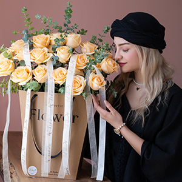

چطور گل تازه را بیشتر نگه داریم؟
چند اقدام کوچک در ساعت اول، تفاوت زیادی در ماندگاری ایجاد میکند.
مطالعه مقالهمقالههایی کوتاه برای هدیه بهتر و نگهداری آسانتر
چند اقدام کوچک در ساعت اول، تفاوت زیادی در ماندگاری ایجاد میکند.
مطالعه مقاله
انتخاب گل فقط انتخاب رنگ نیست؛ لحن، رابطه و زمان هم بخشی از پیاماند.
مطالعه مقاله
نور درست، پایه سلامت برگهاست؛ نه خیلی تند و نه خیلی کم.
مطالعه مقاله
هر فصل عطر، بافت و حس خودش را به هدیه گل میآورد.
مطالعه مقاله
گلدان فقط ظرف نیست؛ ارتفاع، دهانه و تمیزی آن روی عمر گل اثر دارد.
مطالعه مقاله